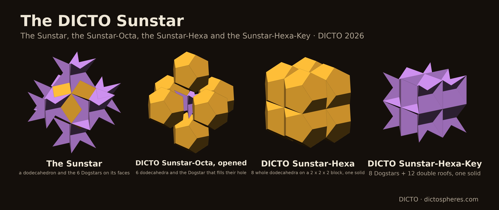
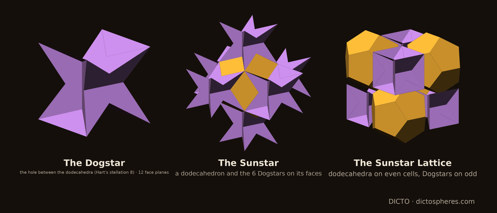
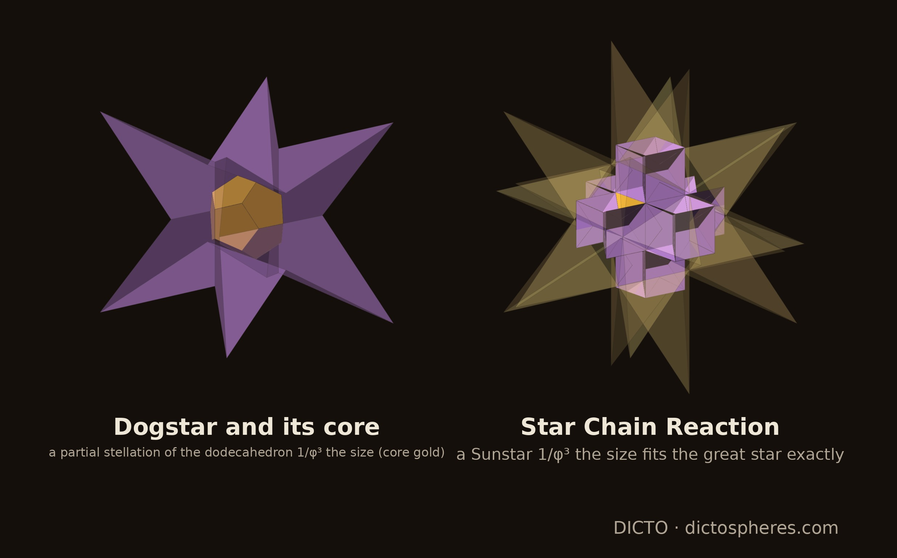
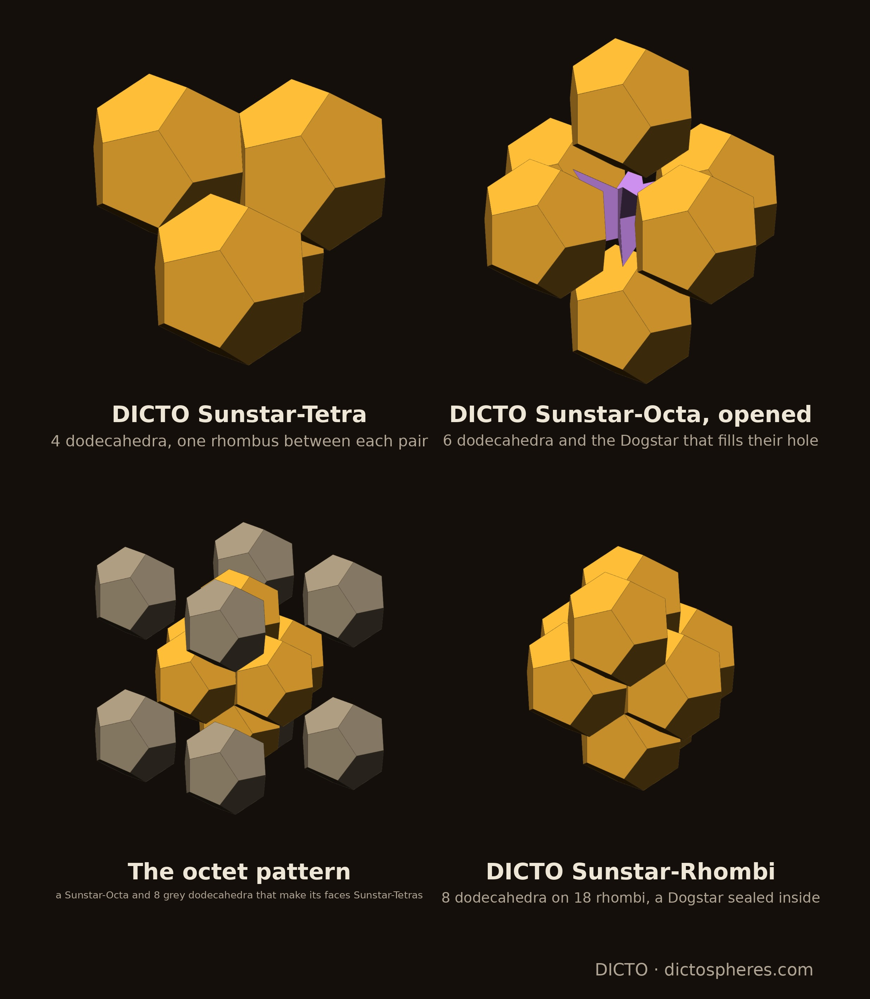
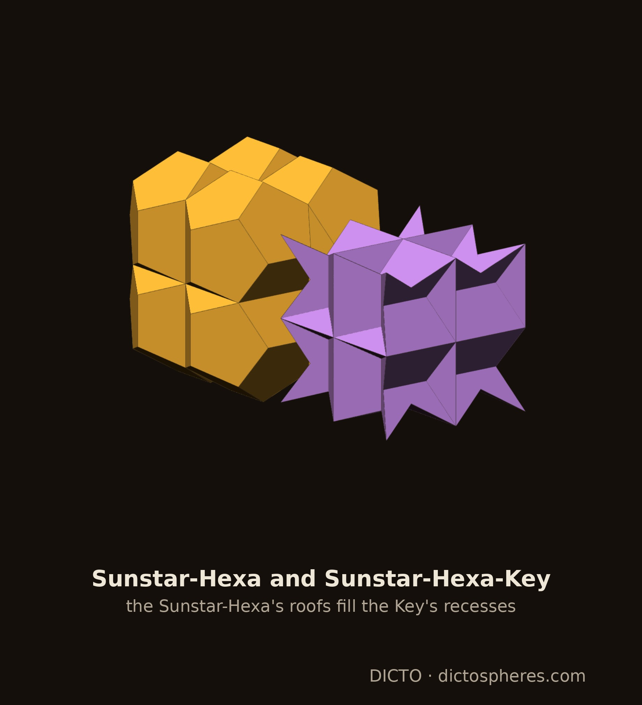

Regular dodecahedra and Dogstars fill space: the Dogstar as an exact stellation, the Star Chain Reaction, the DICTO Sunstar-Tetra, Sunstar-Octa and Sunstar-Rhombi, and the DICTO Sunstar-Hexa and Sunstar-Hexa-Key, all exact; the twin of the DICTO Jewel

Frame. As in the EKP cell [1] and the Jewel [2]: cells are cubes centred on a cubic lattice; a cell is even or odd by the parity of its index sum. All values are at the scale of [2], where a 2 × 2 × 2 block of cells (the Sunstar-Hexa's cube, §4) has edge 1, so a cell has edge 1/2; the scripts use cells of edge 2, where every volume is 64 times larger. Euclid builds the regular dodecahedron on a cube by setting a roof on each face [4]; each roof is (1 + √5)/192 and the dodecahedron (5 + √5)/32.
The Dogstar. Put a dodecahedron on every even cell. Each odd cell is entered by six roofs, one from each face-neighbour; they lie in the cell and meet each other only in faces (exact: pairwise intersection volume 0). What is left is the Dogstar (DICTO's name), of volume 1/8 − 6 × (1 + √5)/192 = (3 − √5)/32, exactly φ/2 at dodecahedron edge 1. Each even cell lies in its own dodecahedron and the roofs fill the rest of the odd cells, so dodecahedra and Dogstars fill space; the dodecahedra take (5 + √5)/8 of it, the density of Betke and Henk's densest lattice packing [9, 10]. This solid and this tiling are Hart's stellation 8 of the dodecahedron [6] (also [7, 8]); what follows is new.
An exact stellation. Take the regular dodecahedron 1/φ³ the size of the lattice's, centred in the odd cell and turned the same way (the core). Its 12 face planes cut space into 63 bounded cells: the core, 12 pyramids, 30 wedges and 20 spikes. Every one lies wholly inside the Dogstar or wholly outside it, and the Dogstar is exactly the core, all 12 pyramids, 24 of the 30 wedges and 8 of the 20 spikes, their volumes adding up to (3 − √5)/32. The 6 wedges left out lie on the cube's axes; the tips of the 8 spikes kept are the cube's 8 corners. The Dogstar also lies wholly inside its own cube's stella octangula (exact), so Dogstars can sit in every cell, eight tips meeting at each cube corner.
The Sunstar (DICTO's name): a dodecahedron with the Dogstars of its six face-neighbour cells, (23 − 5√5)/32.

The great stellated dodecahedron [5] of the core (all 63 cells) has exactly the 20 corners of the lattice's dodecahedron: it is the great star of the EKP cell [1], and the Dogstar is this star cut back to its cube. Inside it sits a whole Sunstar 1/φ³ the size, centred with it and turned the same way: the core itself with the six Dogstars of the 1/φ³ lattice round it. Each of those Dogstars lies wholly inside the great star (exact: its volume met in full), and 24 of their spike tips lie on the great star's surface in such a way that any enlargement about the centre takes them outside: the fit is tight, at exactly 1/φ³. The core holds the next great star, which holds the next Sunstar 1/φ⁶, and so on: dodecahedron ⊃ great star ⊃ Sunstar(1/φ³) ⊃ great star(1/φ³) ⊃ … (DICTO's Star Chain Reaction, finding #12). The ratio φ³ is the inflation factor of icosahedral quasicrystals.

Contacts. Dodecahedra on neighbouring even cells (one step along a face diagonal) do not overlap and touch on exactly one thick Penrose rhombus, found by clipping their coplanar faces exactly: two cube corners, a ridge point and a point inside the face. It is the window of the DICTO Jewel [2]; what is left of the pentagon is Walser's semi-regular pentagon, a regular pentagon with a rhombus cut away [7]. Dodecahedra two cells apart along an axis do not touch.
The DICTO Sunstar-Tetra (DICTO's tetrahedral cluster, finding #16, as one solid): four dodecahedra round a cell corner, each pair meeting on one rhombus (6 in all), all four sharing that corner, where four Dogstar tips meet; volume (5 + √5)/8.
The DICTO Sunstar-Octa (DICTO's octahedral cluster): the six dodecahedra round an odd cell, meeting on 12 rhombi, and that cell's Dogstar. Their six roofs are exactly the roofs that make up the odd cell with the Dogstar (§1), so the Dogstar fills their hole exactly. A Sunstar is a dodecahedron with its six Dogstars; the Sunstar-Octa is a Dogstar with its six dodecahedra, the Sunstar turned inside out. Volume (33 + 5√5)/32.
The DICTO Sunstar-Rhombi: eight dodecahedra on the corners of the face-centred cubic cell, meeting on 18 rhombi (12 along its edges, 6 along the short face diagonals), with the Dogstar of the odd cell at its centre sealed inside, as in the Sunstar-Octa; volume (43 + 7√5)/32.
How they fill space. The fillers are always the dodecahedra and the Dogstars. Each cluster sits on the same cells as the Jewel-Tetra, Jewel-Octa and Jewel-Rhombi [2], so each fills space with copies of itself and loose Dogstars (Dogstars inside no piece) on exactly the lattices found there: 4, 12 and 25 lattices of translations (2, 1 and 9 up to the piece's symmetry), with 4, 5 and 7 loose Dogstars per piece. Shared, they form the octet pattern (8 Sunstar-Tetras round each Sunstar-Octa) and the pyrochlore network of Sunstar-Tetras (DICTO's Kagome network); without overlap at most one Dogstar in six can be inside a Sunstar-Octa.

The twins of DICTO's Hexa and Hexa-Key [13, 2]. Put a whole dodecahedron on each of the eight cells of a 2 × 2 × 2 block, even and odd cells alike. Inside the block they pass through each other; out of it reach 24 roofs, pairwise without overlap. As one solid, the DICTO Sunstar-Hexa is the block with 24 roofs: 1 + 24 × (1 + √5)/192 = (9 + √5)/8. Put Sunstar-Hexas on alternate blocks, rock-salt fashion; each other block is entered by 24 roofs from its six neighbours, three into each of its cells, and what is left is one solid, the DICTO Sunstar-Hexa-Key: 1 − 24 × (1 + √5)/192 = (7 − √5)/8, eight Dogstars joined by twelve double roofs. Its recesses are the Sunstar-Hexas' roofs, so they fill space, in the ratio (17 + 4√5)/11 ≈ 2.358, irrational, where the Jewel's Hexa and Hexa-Key are 5 : 3. Each Sunstar-Hexa meets each of its 12 neighbours on exactly two rhombi (24 in all) and no two overlap.

The Sunstar Lattice and the Stella–Jewel Lattice [2] have the same cells and the same roofs; they differ only in who owns the tip of each roof, the part (√5 − 1)/192 that lies inside the neighbouring cell's stella octangula. A dodecahedron without its six tips is the DICTO Jewel; a Dogstar with them is the stella octangula:
| even cell | odd cell | clusters | Hexa : Hexa-Key | |
|---|---|---|---|---|
| Sunstar Lattice | dodecahedron (5 + √5)/32 | Dogstar (3 − √5)/32 | Sunstar-Tetra, -Octa, -Rhombi | (17 + 4√5)/11 |
| Stella–Jewel Lattice [2] | Jewel 3/16 | stella octangula 1/16 | Jewel-Tetra, -Octa, -Rhombi | 5 : 3 |
So the two families share their contacts (the Penrose windows), their clusters and every tiling, and the clusters look alike; the dodecahedra show whole pentagons where the Jewels show windows and triangles.
In the sources checked (the full text of the library sources listed in the appendix, and web searches on 8–9 and 20 October 2026) we did not find the Star Chain Reaction, the Sunstar clusters as solids, the Sunstar-Hexa or the Sunstar-Hexa-Key.
Exact (ℚ(√5)): sunstar_exact.py (dodecahedron and roofs, the Dogstar and the tiling, the 63 stellation cells of the core, the Star Chain Reaction and its tight fit; log sunstar-exact.log, 12 PASS) and sunstar_clusters.py (contacts by exact clipping, the three clusters, the Sunstar-Hexa and Sunstar-Hexa-Key, the Dogstar in its stella octangula, the volumes at the paper's unit; log sunstar-clusters.log, 14 PASS); both run with the exact tools of [12] (python3 <script> studies/2026-10-18-ocd-octet/scripts). The tilings of the clusters are those of the Jewel clusters, checked in [2] (cluster_exact.py). Figures: sunstar_figs.py (float copies of the exact pieces), shots.mjs (2× pixel ratio), sunstar_compose.py.
The full text of the sources below in DICTO's reference library was searched on 20 October 2026 for: stellation, great stellated, Betke, Hart, Walser, dodecahedra and inflation. None contains the results of this paper. The relevant hits are Betke and Henk's densest lattice packings [9] and the packing studies citing it (Torquato and Jiao; de Graaf, van Roij and Dijkstra, whose dense packings of the great stellated dodecahedron interpenetrate and are not this structure), Messer's stellations of the rhombic triacontahedron, and the icosahedral tiling and quasicrystal papers on inflation (Baake, Grimm, Gähler; Koca et al.; Dietl and Eschenburg). Thirteen further items are page images without a text layer (the patents of Fuller, Snelson, Pearce, Baer, Hogan, Bergman and Lalvani, and Fedorov 1885).
Web searches (20 October 2026): a dodecahedron stellation filling space with regular dodecahedra (Hart [6]); clusters of regular dodecahedra in the densest lattice packing, octahedral and tetrahedral clusters round the holes (nothing on clusters).
| Author(s) | Year | Title |
|---|